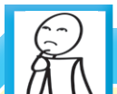

Chapter One
Acting
Introduction
Performing arts involve acting, storytelling, riddles, dance, dramatic poetry, comic skits, recitations, children’s plays, and rituals. In this chapter, you will learn one type of performing arts known as acting. You will also learn how to act and imitate various sounds of living and non-living things. The competencies gained will enable you to develop a talent for acting.

(a) Meaning of acting
(b) Uses of voice in acting
(c) Importance of voice in acting
Acting
Acting is the skill of imitating something. It represents the reality of a person’s daily life in his or her environment.